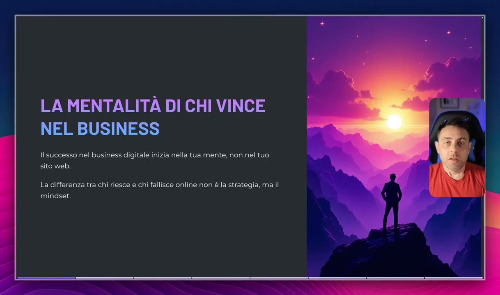
OCR: LA MENTALITÀ DI CHI VINCE NEL BUSINESS Il successo nel business digitale inizia nella tua mente, non nel tuo sito web. La differenza tra chi riesce e chi fallisce online non è la strategia, ma il mindset.
Benvenuti in questa serie di lezioni all'interno della quale svisceremo l'argomento mindset. Mindset che è una parola strabusata dai formatori di tutti i tipi. Lo sentite davvero di tutti i colori. All'interno di queste lezioni capiremo esattamente qual è la mentalità di chi vince nel business. Perché questo? Perché come ho scritto anche in questa slide il successo nel business digitale inizia nella tua mente, non nel tuo sito web. La differenza tra chi riesce e chi fallisce online non è la strategia ma è il mindset. Perché? Perché uno dei problemi, uno degli errori tipici di chi si approccia ad una qualsiasi attività imprenditoriale online sta nel pensare che l'approccio migliore sia quello di badare tecnicismi. I tecnicismi ovviamente sono importanti perché ci permettono ovviamente di mettere in pratica quella che è la nostra strategia di marketing, quella che è la nostra strategia di vendita, in questo caso di prodotti digitali, ma non è tutto. Non è tutto perché il 90 per cento del successo sta all'interno della nostra mente. Se
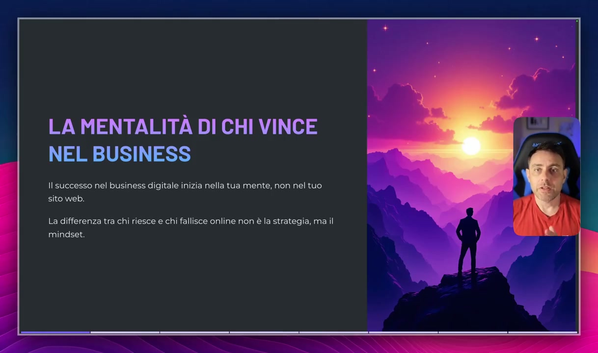
OCR: LA MENTALITÀ DI CHI VINCE NE IUSNIASS Il successo nel business digitale inizia nella tua mente, non nel tuo sito web. La differenza tra chi riesce e chi fallisce online non è la strategia, ma il nalla(e EG
partiamo con una mentalità che è sbagliata, se partiamo con una mentalità che non è finalizzata al risultato e soprattutto se non partiamo con una mentalità consapevole di quelle che sono le problematiche che inevitabilmente avremo in qualsiasi business, ripeto in qualsiasi business in quanto attività imprenditoriale, possiamo essere i tecnici più bravi del mondo, possiamo essere gli strateghi di marketing più bravi del mondo, ma al primo problema abbandoneremo tutto e non riusciremo mai ad avere successo. Ora qui ti mostro subito qualche dato giusto per farti capire, per sbatterti in faccia alla realtà, per darti uno schiaffo in faccia e farti riflettere. Tindaro mi stai dicendo che ci sono fallimenti, chiusure eccetera eccetera. No, ti sto dicendo che il nostro scopo sarà quello di affrontare le problematiche e risolverle, perché chi vince nel business online è chi ha una mentalità proattiva, finalizzata alla risoluzione dei problemi e i problemi ti assicuro si mostreranno inevitabilmente nel corso del tuo cammino da imprenditore digitale e
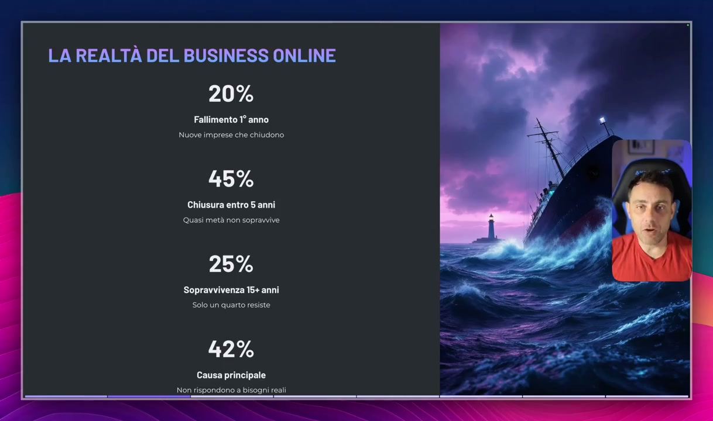
OCR: LA REALTÀ DEL BUSINESS ONLINE 20% Fallimento 1° anno Nuove imprese che chiudono 45% Quasi metà non sopravvive 25% Solo un quarto resiste (o) 42% Causa principale Non rispondono a bisogni reali
ovviamente la differenza tra l'imprenditore che ha successo e l'imprenditore che non lo ha non sta nel tecnicismo quanto nel corretto mindset, quindi nella capacità di risolvere problemi e di farlo con costanza, focus senza rendersi mai. 20 Per cento di aziende che falliscono e chiudono nel primo anno, 45 per cento di queste aziende chiude entro i primi 5 anni, 25 per cento sopravvivenza entro i 15 anni delle aziende, 42 per cento delle problematiche è dato dal fatto che non rispondono a bisogni reali o che comunque hanno un mismatch col cliente. Queste sono le percentuali attualmente in vigore di chi vuole avviare non solo un'attività imprenditoriale online quanto una qualsiasi attività, un qualsiasi business sia esso fisico, sia esso online. Perché questo? Perché i numeri sono impietosi e i numeri ti danno un quadro oggettivo della realtà, quindi vince chi dura, vince chi va
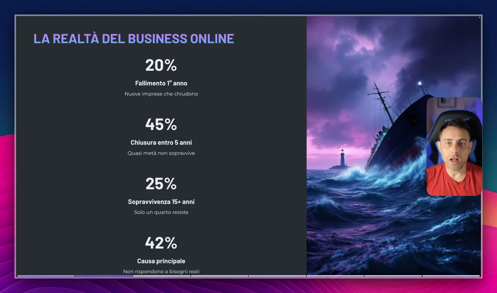
OCR: LA REALTÀ DEL BUSINESS ONLINE 20% Fallimento 1° anno Nuove imprese che chiudono 45% Quasi metà non sopravvive 25% Sopravvivenza 15+ anni Solo un quarto resiste 42% Causa principale Non rispondono a bisogni reali
avanti, vince chi risolve i problemi e noi dobbiamo crearci una mentalità orientata al problem solving. Il successo ama chi non si piange addosso. Questa è una un mantra che io recito da anni. Piangersi addosso, additare colpe della propria situazione ad altri, molto spesso anche in consulenza, sento tinder o si, non riesco ad avere risultati che vorrei perché ho un macello di tasse da pagare, ho un socio che mi ha fregato per cui non ho più le disponibilità economiche, ho la famiglia che mi limita, mia moglie che mi dice che lavoro troppo eccetera eccetera, non sono una soluzione ai nostri problemi. Cioè additare le colpe ad agenti esterni non è una soluzione ai nostri problemi, non ci permette di risolvere con un colpo di banchetta magica i nostri problemi. La soluzione passa per l'azione, iniziare a intravedere opportunità laddove altri
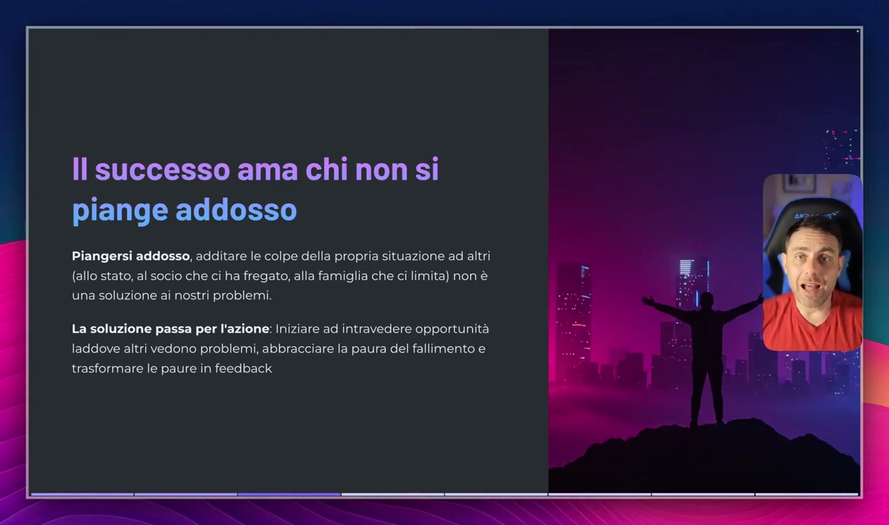
OCR: Il successo ama chi non si piange addosso Piangersi addosso, additare le colpe della propria situazione ad altri (allo stato, al socio che ci ha fregato, alla famiglia che ci limita) non è una soluzione ai nostri problemi. La soluzione passa per l'azione: Iniziare ad intravedere opportunità laddove altri vedono problemi, abbracciare la paura del fallimento e trasformare le paure in feedback
vedono problemi. Te lo ripeto perché questa è una frase estremamente importante per un imprenditore. La soluzione passa per l'azione, iniziare a intravedere opportunità laddove altri vedono problemi. Abbracciare la paura del fallimento, comprendere che il fallimento è una parte normale e una parte direi quasi fisiologica del processo imprenditoriale, trasformare le tue paure in feedback. Questo lo vedremo meglio nel corso di questa lezione. Bene andiamo un attimo ad analizzare quelle che sono i tre pilastri del mindset di successo. Cioè se noi dovessimo parlare di mentalità orientata al successo e la dovessimo segmentare in tre parti, queste sono le tre parti che mi sento di mostrarti per quanto riguarda appunto un corretto mindset orientato al successo. Punto numero uno, orientamento all'azione. Conoscenza senza azione è inutile. Ci sono tantissime persone che ogni giorno acquistano corsi ma sono pochissime quelle che iniziano a guardarlo. I numeri sulla mia piattaforma ti assicuro sono
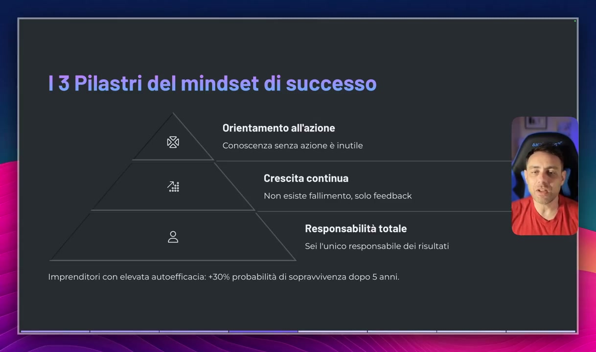
OCR: 13 Pilastri del mindset di successo Orientamento all'azione Conoscenza senza azione è inutile Crescita continua Non esiste fallimento, solo feedback Responsabilità totale Sei l'unico responsabile dei risultati Imprenditori con elevata autoefficacia: +30% probabilità di sopravvivenza dopo S anni.
davvero impietosi e riflettono, non sono un'anomalia, riflettono quella che è un trend a livello mondiale di persone che comprano corsi di tutti i tipi ma poi non li aprono, non li studiano perché iniziano ad avere la classica scusa del non ho tempo, inizio domani, inizio dopodomani e poi dopo un anno sono sempre allo stesso punto. L'orientamento di una persona che ha un mindset orientato al successo è mirato all'azione. La conoscenza senza azione è inutile. Quindi intanto dobbiamo formarci, dobbiamo studiare, dobbiamo studiare bene. Io consiglio sempre di studiare almeno un due tre volte i miei corsi in modo tale da comprendere appieno tutte le sfaccettature visto che i miei percorsi sono molto spesso ricchi di sfaccettature e devo dire che sono anche nella loro completezza abbastanza duri da digerire. Per esempio queste lezioni sul mindset saranno abbastanza dure da digerire per chi non ha un mindset orientato al successo, per chi ha una mentalità della sicurezza orientata
OCR: 13 Pilastri del mindset di successo Orientamento all'azione 2 DSi Conoscenza senza azione è inutile Crescita continua Non esiste fallimento, solo feedback @ Responsabilità totale d n Sei l'unico responsabile dei risultati Imprenditori con elevata autoefficacia: +30% probabilità di sopravvivenza dopo S anni.
alla zona di comfort. Tutti i paradigmi che sono contrari al successo imprenditoriale e noi dobbiamo sdoganare questi miti, dobbiamo distruggere queste credenze, dobbiamo riprogrammare la nostra mente per orientarla al successo imprenditoriale abbracciando la complessità. Quindi conoscenza senza azione è inutile, dobbiamo agire. Quindi studiamo il percorso, una volta che studiamo il percorso facciamo una cosa più difficile che attualmente esistente. Iniziamo a mettere le mani in pasta e iniziamo anche a sbagliare perché l'errore è un processo fisiologico così come il fallimento. Dobbiamo iniziare a comprendere che l'errore fa parte del nostro processo evolutivo. Da piccoli se noi non avessimo iniziato a gattonare, se non fossimo caduti non avremmo iniziato a camminare. Se noi non avessimo sbagliato non fossimo caduti per esempio quando guidavamo la bicicletta, oggi non sapremmo guidare la bicicletta. Il processo di apprendimento tramite
OCR: 13 Pilastri del mindset di successo Orientamento all'azione Conoscenza senza azione è inutile Crescita continua Non esiste fallimento, solo feedback Responsabilità totale Sei l'unico responsabile dei risultati Imprenditori con elevata autoefficacia: +30% probabilità di sopravvivenza dopo S anni.
errore è uno dei processi più normali del genere umano e che ne ha degredato il successo e l'evoluzione nel corso dei millenni. Quindi perché imparare a guidare la bicicletta cadendo è normale per la mentalità delle persone comuni mentre invece fallire in un'attività imprenditoriale e imparare dai propri errori non è normale. Perché? Perché la società ci ha abituato al fatto, fin dalla scuola in cui c'era il voto negativo, il classico 4, 5, 6, meno o meno, ci ha orientato al fatto che prendere un voto basso, sbagliare, errare, non avere successo in un compito, tendenzialmente era un qualcosa di negativo. Quindi dobbiamo sdoganare anni e anni di programmazione in cui la società ci ha voluti come persone, come delle capre, come delle persone che non riconoscevano la naturale evoluzione dell'essere umano mediante tentativo, errore, fallimento, caduta e ripresa e dobbiamo riprogrammare la nostra mente per tararla su questo
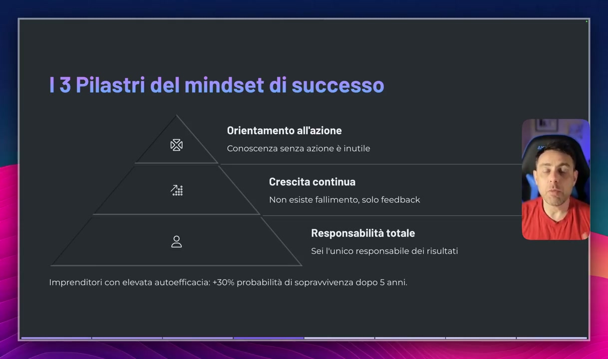
OCR: 13 Pilastri del mindset di successo Orientamento all'azione Conoscenza senza azione è inutile Crescita continua Non esiste fallimento, solo feedback Responsabilità totale Sei l'unico responsabile dei risultati Imprenditori con elevata autoefficacia: +30% probabilità di sopravvivenza dopo 5 anni.
modo di lavoro. Quindi orientamento orientato all'azione. Crescita continua. Non esiste fallimento. Il fallimento è un feedback. Come dico sempre, quando noi per esempio generiamo delle campagne su facebook, insieme a spendere su facebook, se la campagna su facebook non funziona, non abbiamo bruciato budget, abbiamo investito in piattaforma per capire semplicemente che cosa non funzionava e dobbiamo ovviamente raddrizzare il tiro, ma sulla base del feedback che abbiamo ricevuto. Quindi come vedi, il fallimento, che per taluni può essere esempio fallimento nella creazione di una campagna che non funziona, per altri, per chi ha un mindset orientato al successo, è tendenzialmente una fonte di feedback per capire che cosa non va e raddrizzare il tiro. E poi un altro aspetto molto interessante è la responsabilità totale. Come ho detto prima, devi abituarti al fatto che sei l'unico responsabile dei tuoi risultati. Io ho fatto un'arte marziale per circa 30 anni in cui si
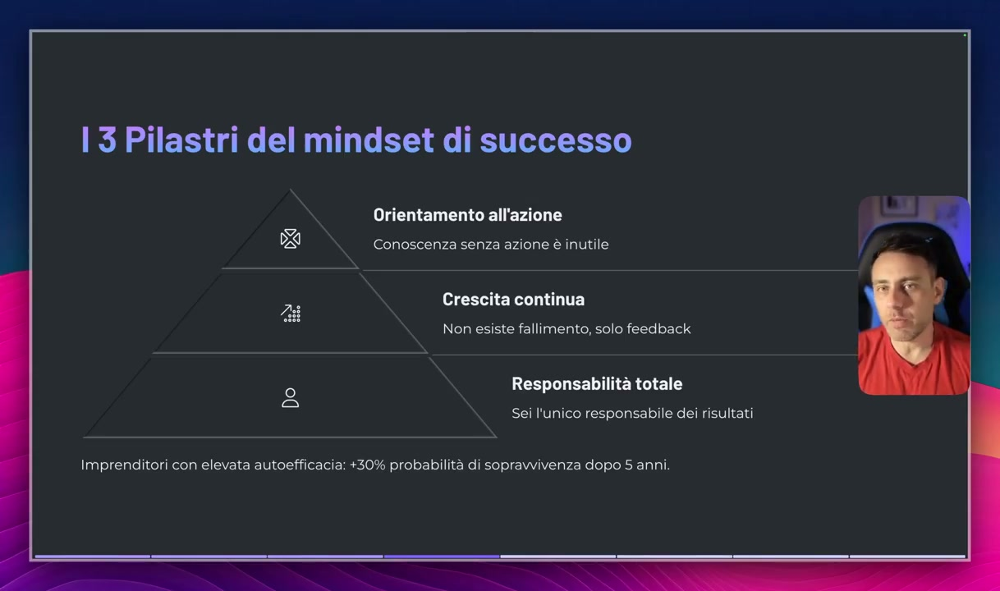
OCR: 13 Pilastri del mindset di successo Orientamento all'azione Va DS Conoscenza senza azione è inutile Crescita continua Non esiste fallimento, solo feedback a Responsabilità totale dd Sei l'unico responsabile dei risultati Imprenditori con elevata autoefficacia: +30% probabilità di sopravvivenza dopo 5 anni.
ripeteva un mantra, che era un mantra di filosofia giapponese, filosofia orientale, in cui si diceva io sono sorgente rifugio alla mia forza su chi posso contare se non su me stesso. E questo è un mantra che mi ha seguito fin da quando avevo 11 anni e che devo dire è stato abbastanza responsabile del mio successo imprenditoriale, perché fin dalla teneretà ho capito che se c'era un problema solamente io potevo risolverlo. Questa filosofia dice che per esempio in te stesso, uomo, in te stesso ci sono le risposte ai tuoi problemi. Non devi cercarle altrove, non devi cercarle all'esterno, non dobbiamo rivolgerci ad altri. Magari sì, per un aiuto sì, non sto dicendo che non dobbiamo essere aiutati, ma che la responsabilità delle nostre azioni grava solamente su noi stessi, il nostro futuro è nelle nostre mani e nessuno può aiutarci a cambiarlo se noi non siamo i primi a volerlo cambiare. E c'è una stima, io nel corso di queste lezioni ti mostrerò molto spesso delle statistiche per farti vedere che quello che dico è reale, non
OCR: 13 Pilastri del mindset di successo Orientamento all'azione Conoscenza senza azione è inutile Crescita continua Non esiste fallimento, solo feedback Responsabilità totale Sei l'unico responsabile dei risultati Imprenditori con elevata autoefficacia: +30% probabilità di sopravvivenza dopo S anni.
è campatinario, non sono delle ipotesi, ci sono delle stime, ci sono degli studi. In questo caso c'è una stima, c'è uno studio che dice che gli imprenditori con elevata autoefficacia, che hanno molta sicurezza di sé, che accettano il fallimento, che fanno del fallimento il proprio feedback e che sono consci del fatto che la responsabilità del business sta nelle loro mani, hanno un 30% di sopravvivenza, di probabilità di sopravvivenza della loro azienda dopo i cinque anni. Lascia la zona di comfort ed abbraccia l'insicurezza per avere successo. Ci sono due tipologie di mindset. A sinistra il mindset di chi vive nella zona di comfort. Molto spesso, scusa ma te lo devo dire, è la mentalità del dipendente, di chi il 27 del mese, ora non lo so perché non sono mai stato un dipendente, ma di chi diciamo a fine mese percepisce uno stipendio. La zona di comfort è data da chi cerca sicurezza, da chi pensa nel breve termine, sono un dipendente, ho il mio stipendio da 1300 euro al mese, aspetto la fine del mese, poi poco importa se magari riesco a
OCR: Lascia la zona di comfort ed abbraccia l'insicurezza per avere successo fa Zona di Comfort Mindset di Successo * Cerca sicurezza Abbraccia l'incertezza Pensa a breve termine Visione a lungo termine Evita i rischi Calcola e assume rischi "Non posso permettermelo" "Come posso permettermelo?" Teme il giudizio Si concentra sul valore
risparmiare in banca 20 euro, poco importa se poi magari sul lungo periodo c'è qualche imprevisto e sono praticamente consumato perché non avrò un centesimo in banca, ma vivo alla giornata. Cerco la sicurezza dell'istante perché la sicurezza del breve termine mi fa stare bene. Evite rischi perché tutto ciò che è rischioso viene visto come un qualcosa di negativo. Non posso permettermelo e quindi si iniziano a cercare delle scuse, non posso permettermi di lasciare il mio lavoro per abbracciare un'attività imprenditoriale, oppure non posso permettermi di iniziare un'attività imprenditoriale perché richiederebbe troppo tempo, non posso permettermi di iniziare un'attività imprenditoriale perché la mia famiglia mi andrebbe contro, i giudizi della mia famiglia sarebbero negativi, sono tutti paradigmi che dobbiamo estirpare, che dobbiamo fare il prima possibile per aver successo in un business, in questo caso ovviamente nel business che stai studiando in questo momento con queste lezioni. E poi tema il giudizio, come ti dicevo ho paura del giudizio della mia famiglia, ho paura del giudizio degli altri, tante volte nelle
OCR: Lascia la zona di comfort ed abbraccia l'insicurezza per avere successo Zona di Comfort Mindset di Successo * Cerca sicurezza Abbraccia l'incertezza Pensa a breve termine Visione a lungo termine Evita i rischi Calcola e assume rischi "Non posso permettermelo" "Come posso permettermelo?" Teme il giudizio Si concentra sul valore
mie sponsorizzate sono persone che dicono guarda sei un truffatore senza neanche conoscermi, sei un ladro, ok? Se io dovessi temere il giudizio degli altri oggi non avrei un'azienda che fattura 7-8 milioni di euro ogni singolo anno, ok? Invece qual è il mindset di successo, il mindset di un imprenditore che è volto a ottenere risultati? Punto numero uno, abbraccia l'incertezza. Ragazzi dobbiamo comprendere che l'incertezza fa parte del processo imprenditoriale, non esiste un processo imprenditoriale di successo senza l'incertezza. Qualsiasi business esso sia, qualsiasi business vedrai che ti millanteranno come sicuro, come rivoluzionario, in realtà avrà il suo rischio e comprendere che ogni business, ogni attività imprenditoriale ha un suo rischio e comprendere che possiamo fallire perché fa parte del processo fisiologico dell'imprenditore, beh allora questo ci dà un mindset orientato al successo. Visione a lungo termine, come dico sempre c'è stato un periodo in cui c'erano dei
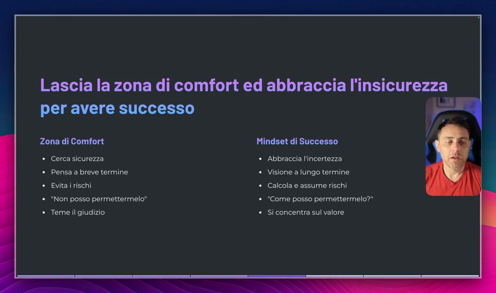
OCR: Lascia la zona di comfort ed abbraccia l'insicurezza per avere successo Zona di Comfort Mindset di Successo * Cerca sicurezza Abbraccia l'incertezza Pensa a breve termine Visione a lungo termine Evita i rischi Calcola e assume rischi "Non posso permettermelo" "Come posso permettermelo?" Teme il giudizio Si concentra sul valore
formatori, ovviamente dei truffatori, che da Dubai, neanche a dirlo, ti vendevano il servizio Dump4U con l'e-commerce in cui tu gli davi 5 mila euro e loro ti promettevano che entro 30 giorni facevi i tuoi primi 5-10 mila euro, salvo poi bloccarti su tutte le varie chat whatsapp in cui ti inserivano e lasciarti con 5 mila euro in meno è un e-commerce che potrei realizzare anche tu andando su Shopify, registrandoti e avendo accesso al layout base di Shopify. Perché questo? Perché queste persone hanno preferito la sostenibilità sul breve termine, quindi truffare le persone sul breve termine per fare una marea di soldi e poi scomparire, ok? Io ho una visione contraria, a parte il fatto che non sono dell'idea che truffare sia proprio l'optimum diciamo per un imprenditore, ma io sono online dal 2016, ok? Da anni e anni formo le persone. Perché? Perché ho una visione più sul lungo periodo, avrei potuto fare tantissimi soldi promettendo mari e monti, promettendo che anche a te che mi stai seguendo in questo momento, che farai sicuramente migliaia di euro
OCR: Lascia la zona di comfort ed abbraccia l'insicurezza l per avere successo — Zona di Comfort Mindset di Successo * Cerca sicurezza Abbraccia l'incertezza Pensa a breve termine Visione a lungo termine Evita i rischi Calcola e assume rischi "Non posso permettermelo" "Come posso permettermelo?" Teme il giudizio Si concentra sul valore
sicuramente dal divano di casa tua senza fare nulla in modo completamente massivo. Ma avrei tradito me stesso, avrei tradito la mia filosofia di vita, avrei tradito la mia filosofia imprenditoriale e soprattutto ti avrei letto una bugia. Perché? Perché ho sempre avuto una visione del business, anche per quanto riguarda appunto il business di formazione, sul lungo periodo ed è questa la visione che voglio che tu abbia quando abbraccerai questo business. Quindi la visione sul lungo termine inizia a pensare che i risultati si otterranno sul lungo periodo. Magari all'inizio avrai problemi, inizierai a montare il tuo funnel e non funzionerà, creerai la tua compagna facebook e non funzionerà. Tutti questi ostacoli fanno parte normale del processo fisiologico che ti porterà ad avere successo. Quindi elimina il pensiero sul breve termine, sul crearti soldi da nulla senza fare nulla in poco tempo e abbraccia una visione imprenditoriale sul lungo termine. Perché è quella che ti permette di avere
OCR: Lascia la zona di comfort ed abbraccia l'insicurezza per avere successo Zona di Comfort Mindset di Successo * Cerca sicurezza Abbraccia l'incertezza Pensa a breve termine Visione a lungo termine Evita i rischi Calcola e assume rischi "Non posso permettermelo" "Come posso permettermelo?" Teme il giudizio Si concentra sul valore
Come funzionano i risultati economici al di fuori del comune? E' quella che mi ha permesso di creare aziende che generano milioni. Tu magari non vuoi creare un'azienda. Magari in questo momento pensi di fare 2-3 mila euro che per te vanno già bene. O magari sei un imprenditore che è già una tua azienda e vuoi un secondo business che ti permetta di avere una fonte di guadagno diversificata rispetto alla tua prima azienda. In questo caso comprenderai il discorso che sto facendo. Ma se sei una persona comune che vuole abbracciare un business online per crearsi una sua seconda fonte di reddito magari sei un dipendente perché magari hai già un tuo stipendio e non ti basta questo stipendio allora devi abbracciare la visione sul lungo periodo ed assolutamente eliminare il pensiero a breve termine perché è dannosissimo. Calcola ed assume i rischi. Il mindset di successo calcola ed assume i rischi. Capisce, comprende, è conscio del fatto che esistono dei rischi, li calcola e li abbraccia come parte del processo imprenditoriale di crescita.
OCR: Lascia la zona di comfort ed abbraccia l'insicurezza per avere successo Zona di Comfort Mindset di Successo * Cerca sicurezza Abbraccia l'incertezza Pensa a breve termine Visione a lungo termine Evita i rischi Calcola e assume rischi "Non posso permettermelo" "Come posso permettermelo?" Teme il giudizio Si concentra sul valore
Avremo il rischio che il funnel non funzioni, ci sarà il rischio che la campagna Facebook non funzioni, ci sarà il rischio che le campagne non funzionino anche per settimane ma tutto questo deve servirci come feedback per capire come raddrizzare il tiro. E qua puoi entrare in gioco i tecnicismi, la conoscenza e poi ovviamente il supporto. Passiamo dal non posso permettermelo al come posso permettermelo. Cambiamo radicalmente la nostra visione delle cose che ci circondano. Sento tantissime persone che dicono io ad esempio non potrò mai diventare ricco, non potrò mai diventare milionare. Anch'io quando ero un ingegnere avevo 3500 euro nel conto in banca e pensavo che fare un milione fosse un qualcosa di assolutamente impossibile. Per me oggi avere un milione in banca è il minimo. Senza il mio milione in banca iniziare a pensare che c'è qualcosa che non funziona. Perché? Perché sono passato dal non posso permettermelo, non avrò mai un milione al come posso avere un milione in banca.
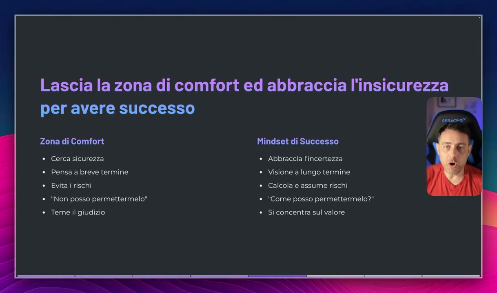
OCR: Lascia la zona di comfort ed abbraccia l'insicurezza per avere successo Zona di Comfort Mindset di Successo * Cerca sicurezza Abbraccia l'incertezza Pensa a breve termine Visione a lungo termine Evita i rischi Calcola e assume rischi "Non posso permettermelo" "Come posso permettermelo?" Teme il giudizio Si concentra sul valore
Questo è il mindset di successo, questo è il mindset di una persona che è finalizzata ad ottenere risultati non solo nel business perché tutto quello che ti spiego potrai applicarlo in qualsiasi aspetto della tua vita, potrai applicarlo nell'amore, potrai applicarlo in famiglia, potrai applicarlo nella società. Il mindset di una persona che è successo in qualsiasi aspetto della vita parte dal non posso permettermelo al come posso permettermelo. E poi non teme il giudizio degli altri. Ragazzi fregatevene del giudizio degli altri. Tenevi assolutamente a fregare perché il 99% delle persone ha risultati medi o non ha risultati, invidia chi ha risultati e tende a trascinarlo nella media delle persone. E se noi vogliamo avere successo dobbiamo assolutamente non curarci dei giudizi degli altri. Partiamo con un piccolo esercizio, il potere delle affermazioni attive. Andiamo a cambiare quelle che sono le nostre affermazioni ribaltando, andando a vedere il bicchiere mezzo pieno, non più mezzo vuoto.
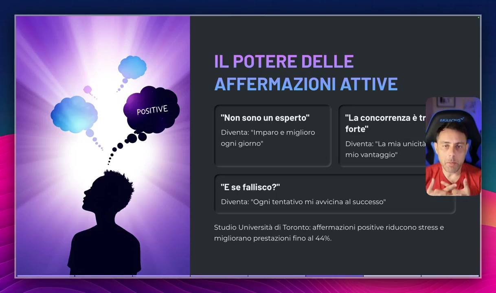
OCR: IL POTERE DELLE AFFERMAZIONI ATTIVE posiTIVE À "Non sono un esperto" "La concorrenza è tr Diventa: "Imparo e miglioro forte! ogni giorno" Diventa: "La mia unicità mio vantaggio" "E se fallisco?" Diventa: "Ogni tentativo mi avvicina al successo" Studio Università di Toronto: affermazioni positive riducono stress e migliorano prestazioni fino al 44%.
Ad esempio, non sono un esperto. Questa affermazione nella tua testa deve diventare imparo e migliore ogni giorno per diventare un esperto. Vedi come cambiamo il nostro angolo di visione del mondo che ci circonda, della realtà che ci circonda, passando da un'affermazione negativa a un come possiamo diventare qualcuno. La concorrenza è troppo forte? Diventa la mia unicità e il mio vantaggio. Andiamo a trovare opportunità laddove altri vedono problemi. Il e se fallisco diventa ogni tentativo mi avvicina al successo. C'è uno studio a tal proposito dell'Università di Toronto che dice che le affermazioni positive riducono lo stress dell'imprenditore e migliorano le prestazioni fino al 44%. Quindi inizi a fare questo esercizio e inizi a pensare a delle paure che hai a livello imprenditoriale e trasforma quelle paure in sensazioni positive. Questo è un piccolo esercizio che puoi fare. Se hai un foglio, elenca quelle che sono le tue paure e poi trasformale in sensazioni positive.
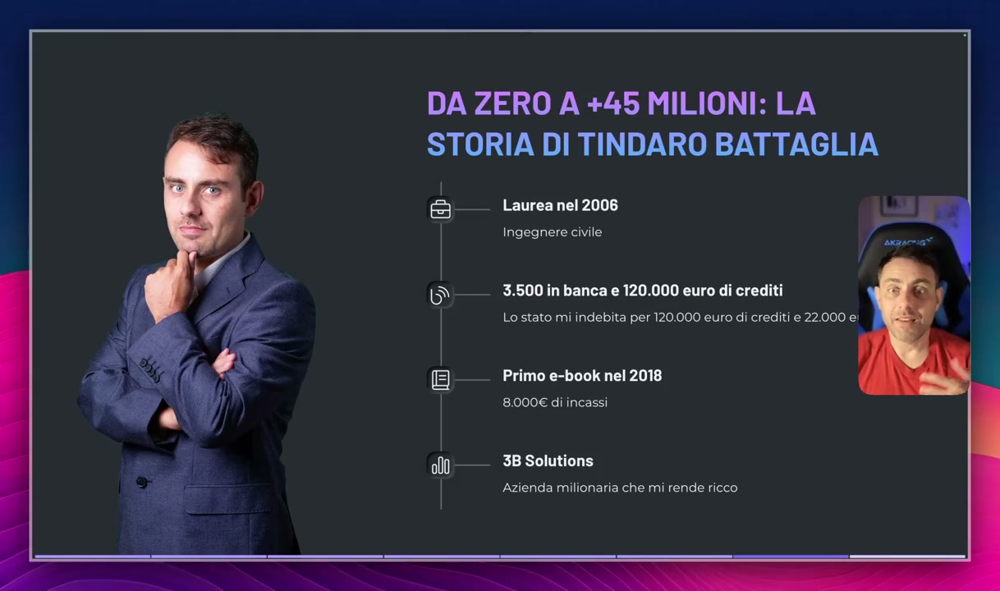
OCR: DA ZERO A +45 MILIONI: LA STORIA DI TINDARO BATTAGLIA | E} Laurea nel 2006 Ingegnere civile Ò 3.500 in banca e 120.000 euro di crediti Lo stato mi indebita per 120.000 euro di crediti e 22.000 e! Primo e-book nel 2018 8.000€ di incassi 3B Solutions Azienda milionaria che mi rende ricco
Questa per esempio è la mia storia. Io sono partito totalmente da zero e ad oggi ho una società che ha generato ad oggi, alla data di registrazione di questo video, oltre 45 milioni di fatturato cumulativo. Chi sono? Chiamati Indoro Battaglia, sono un ingegnere, mi laureo nel 2006, mi laureo in ingegneria civile, quindi in un qualcosa di totalmente diverso rispetto a quello che sto insegnando ad oggi, marketing digitale, vendita di prodotti digitali, vendita online, avevo 3.500 Euro in banca, avevo 120.000 Euro di crediti, fesci, dei lavori per alcune cooperative che non mi furono mai pagate. E non solo questo, chi era proprietario di queste cooperative incassò le fatture, si prese le fatture, le scaricò e ovviamente siccome ero nel regime ordinario IVA, ai tempi non sapevo nulla di fiscalità e quant'altro, mi indebitai per 22.000 Euro di IVA perché lo Stato ovviamente voleva l'IVA da me. Quindi mi ritrovai giovanotto, 26-27 anni, con 3.500 Euro in banca, 120.000 Euro di crediti mai riscossi e con un indebitamento per un lavoro fatto e mai pagato di 22.000 Euro di IVA. Ero nel punto più basso della mia vita e mi ero appena sposato,
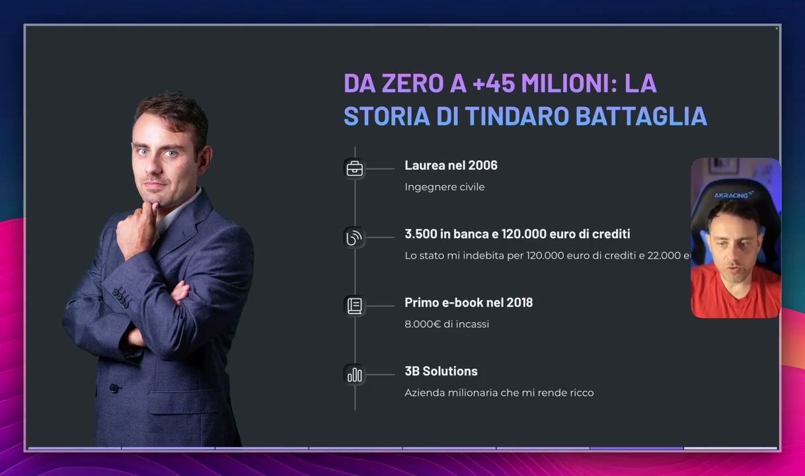
OCR: DA ZERO A +45 MILIONI: LA STORIA DI TINDARO BATTAGLIA I 2 Laurea nel 2006 Ingegnere civile 3.500 in banca e 120.000 euro di crediti Lo stato mi indebita per 120.000 euro di crediti e 22.000 e Primo e-book nel 2018 8.000€ di incassi 3B Solutions Azienda milionaria che mi rende ricco
mia moglie stava per nascere già, la mia prima figlia e immaginati la mia situazione, 3.500 Euro in banca con il dover pagare i contributi della mia cassa professionale, si chiama Inarcassa, non è l'Inps perché gli ingegneri hanno una cassa privata, quindi dovevo dare circa 3.500 Euro l'anno che era uno sfacelo per chi era agli inizi, per chi non poteva permettersi, tra l'altro con un indebitamento di 22.000 Euro che dilazionai in 5 anni con lo Stato, di dover far fronte anche a queste spese. Quindi da un lato avevo crediti mai riscossi, ben 120.000 Euro che non sono mai riuscito a recuperare, dall'altro questo lavoro che stavo compiendo mi generò 22.000 Euro di debiti con lo Stato, contemporaneamente avevo la mia famiglia, mi ero sposato, stava per nascere mia figlia, insomma una situazione che non era proprio delle migliori. Poi nel 2018 iniziai a vendere prodotti digitali e prodotti in affiliazione, il mio primo ebook si chiamò Retargeting e feci circa 8.000 Euro con la vendita di un singolo prodotto digitale e da lì poi creai la mia prima azienda, la Trebi Solutions, la creai nel 2016, iniziamo a fare affiliazioni per poi creare appunto il mio primo ebook nel 2018, Retargeting e poi il resto è storia.
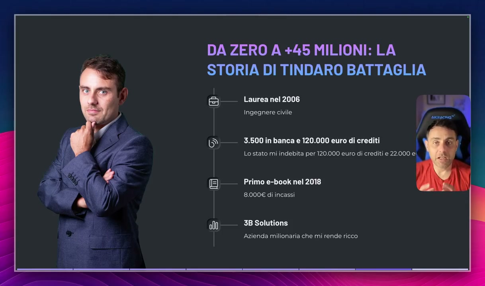
OCR: DA ZERO A +45 MILIONI: LA STORIA DI TINDARO BATTAGLIA I 2 Laurea nel 2006 Ingegnere civile 3.500 in banca e 120.000 euro di crediti Lo stato mi indebita per 120.000 euro di crediti e 22.000 ei Primo e-book nel 2018 8.000€ di incassi 3B Solutions Azienda milionaria che mi rende ricco
Oggi sono un imprenditore di successo, sono il punto di riferimento quando si parla di marketing, di vendita online, di prodotti digitali, di facebook ads e ho un'azienda milionaria che mi ha reso ricco, ma tutto questo è partito da una mentalità orientata al successo. Ora facciamo un compito per casa e terminiamo questa lezione. Identifica quelli che sono i tuoi blocchi mentali, quindi fai una riflessione e capisci quelli che sono i blocchi che ti eliminano dal iniziare o che ti hanno limitato dall'iniziare un percorso di questo tipo. Ad esempio, so che potrei avere più successo online ma, completa la tua frase, ok? Capisci quali sono i blocchi che in questo momento ti stanno limitando dall'avere il successo che meriti. Identifica questi blocchi e scrivi tutte le risposte che ti vengono in mente. Identifica quelli che sono i pattern limitanti, ad esempio, so che potrei avere più successo online ma ho paura di spendere soldi, so che potrei avere più successo online ma ho paura di fallire, ok?
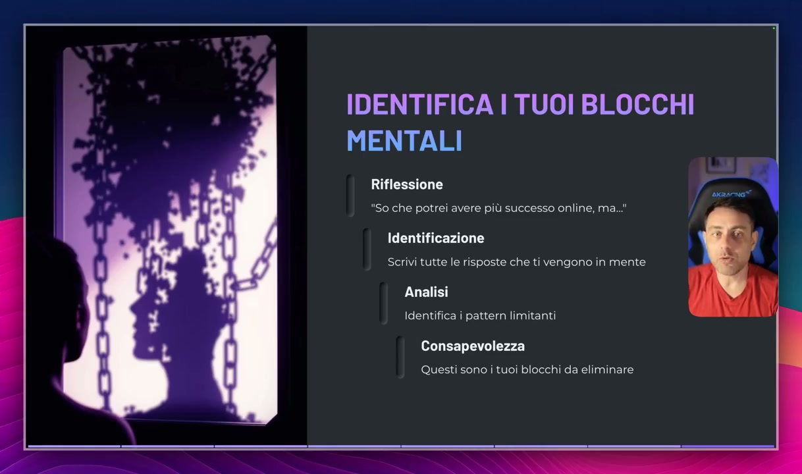
OCR: IDENTIFICA I TUOI BLOCCHI MENTALI Riflessione "So che potrei avere più successo online, ma..." Identificazione Scrivi tutte le risposte che ti vengono in mente Analisi Identifica i pattern limitanti Consapevolezza Questi sono i tuoi blocchi da eliminare
Una volta che hai identificato questi pattern, questi sono i tuoi blocchi che devi eliminare. Questi sono i blocchi che devi eliminare dalla tua mente per avere un mindset orientato al successo. Ovviamente scopriremo come fare nel corso delle prossime lezioni.